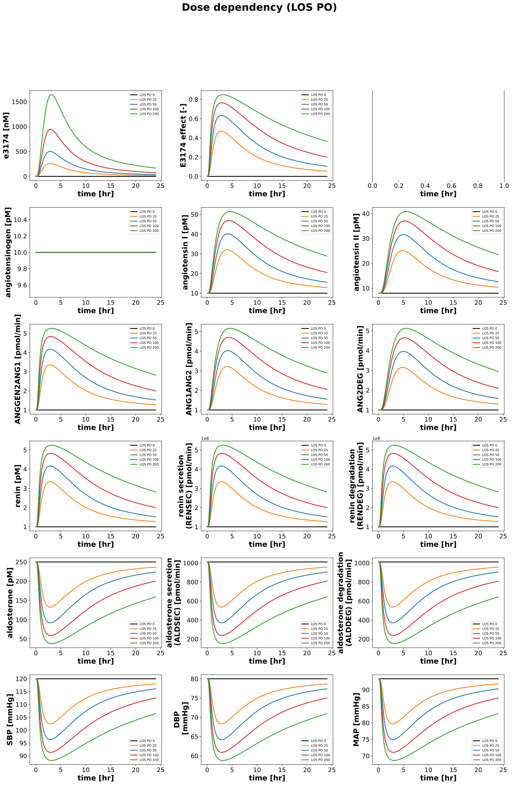

DoseDependencyExperiment
Models
Datasets
Figures
- Fig_dose_dependency_pk_los_PO: DoseDependencyExperiment_Fig_dose_dependency_pk_los_PO.svg
- Fig_dose_dependency_los_PO: DoseDependencyExperiment_Fig_dose_dependency_los_PO.svg
{kind=link}
Fig_dose_dependency_pk_los_PO

|
Fig_dose_dependency_los_PO
|  |
Code
../../../../experiments/misc/dose_dependency.py
from copy import deepcopy
from typing import Dict
from matplotlib.pyplot import legend
from sbmlsim.plot import Axis, Figure, Plot
from sbmlsim.simulation import Timecourse, TimecourseSim
from pkdb_models.models.losartan.experiments.base_experiment import (
LosartanSimulationExperiment,
)
from pkdb_models.models.losartan.helpers import run_experiments
class DoseDependencyExperiment(LosartanSimulationExperiment):
"""Tests po application."""
routes = {
"los": ["PO"],
# "los": ["PO", "IV"],
# "e3174": ["IV"], # FIXME: this becomes unstable at high doses
}
doses = [
0,
25,
50, 100, 200
] # [mg]
colors = [
"black",
"tab:orange",
"tab:blue", "tab:red", "tab:green"
]
def simulations(self) -> Dict[str, TimecourseSim]:
Q_ = self.Q_
tcsims = {}
for substance, routes in self.routes.items():
for route in routes:
for dose in self.doses:
tcsims[f"los_{substance}_{route}_{dose}"] = TimecourseSim(
Timecourse(
start=0,
end=24 * 60, # [min]
steps=300,
changes={
**self.default_changes(),
f"{route}DOSE_{substance}": Q_(dose, "mg"),
},
)
)
return tcsims
def figures(self) -> Dict[str, Figure]:
return {
**self.figure_pk(),
**self.figure_pd(),
}
def figure_pk(self) -> Dict[str, Figure]:
figures = {}
for substance, routes in self.routes.items():
for route in routes:
fig = Figure(
experiment=self,
sid=f"Fig_dose_dependency_pk_{substance}_{route}",
num_rows=3,
num_cols=4,
name=f"Dose dependency PK ({substance.upper()} {route})"
)
plots = fig.create_plots(xaxis=Axis("time", unit="hr"), legend=True)
sids = [
# plasma
"[Cve_los]",
"[Cve_e3174]",
"[Cve_l158]",
"mr_e3174_los_plasma",
# "mr_los_e3174_plasma",
# urine,
"Aurine_los",
"Aurine_e3174",
"Aurine_l158",
"mr_e3174_los_urine",
# "mr_los_e3174_urine",
# feces
"Afeces_los",
"Afeces_e3174",
"Afeces_l158",
"mr_e3174_los_feces",
# "mr_los_e3174_feces",
]
for ksid, sid in enumerate(sids):
if sid:
plots[ksid].set_yaxis(label=self.labels[sid], unit=self.units[sid])
for ksid, sid in enumerate(sids):
if sid:
for kval, dose in enumerate(self.doses):
if dose == 0 and sid.startswith(f"mr_"):
continue
plots[ksid].add_data(
task=f"task_los_{substance}_{route}_{dose}",
xid="time",
yid=sid,
label=f"{substance.upper()} {route} {dose}",
color=self.colors[kval],
)
figures[fig.sid] = fig
return figures
def figure_pd(self) -> Dict[str, Figure]:
figures = {}
for substance, routes in self.routes.items():
for route in routes:
fig = Figure(
experiment=self,
sid=f"Fig_dose_dependency_{substance}_{route}",
num_rows=6,
num_cols=3,
name=f"Dose dependency ({substance.upper()} {route})"
)
plots = fig.create_plots(xaxis=Axis("time", unit="hr"), legend=True)
# for k in [30, 31]:
# plots[k].xaxis = None
sids = [
"[e3174]", # e3174 in Vplasma [0-1000 nM] # "[Cve_e3174]",
"fe_e3174", # [-] effect via exp3174
None,
"[anggen]", # angiotensinogen in Vplasma
"[ang1]", # angiotensin I in Vplasma
"[ang2]", # angiotensin II in Vplasma
"ANGGEN2ANG1", # angiotensinogen to angiotensin I renin)
"ANG1ANG2", # angiotensin I to angiotensin II ACE)
"ANG2DEG", # angiotensin II degradation ANG2DEG)
"[ren]", # renin in Vplasma
"RENSEC", # renin secretion RENSEC)
"RENDEG", # renin degradation RENDEG)
"[ald]", # aldosterone in Vplasma
"ALDSEC", # aldosterone secretion ALDSEC)
"ALDDEG", # aldosterone degradation (ALDDEG),
"SBP",
"DBP",
"MAP",
]
for ksid, sid in enumerate(sids):
if sid:
plots[ksid].set_yaxis(label=self.labels[sid], unit=self.units[sid])
for ksid, sid in enumerate(sids):
if sid:
for kval, dose in enumerate(self.doses):
plots[ksid].add_data(
task=f"task_los_{substance}_{route}_{dose}",
xid="time",
yid=sid,
label=f"{substance.upper()} {route} {dose}",
color=self.colors[kval],
)
figures[fig.sid] = fig
return figures
if __name__ == "__main__":
run_experiments(DoseDependencyExperiment, output_dir=DoseDependencyExperiment.__name__)